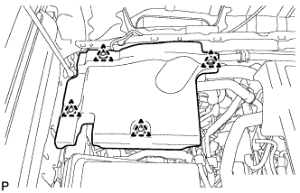
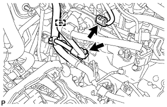
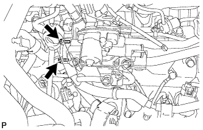
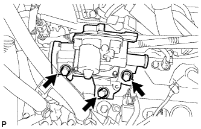
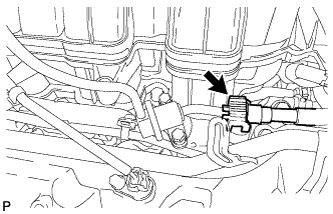
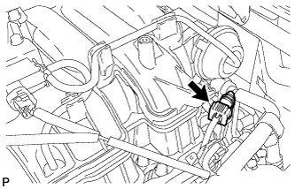

FUEL INJECTOR > REMOVAL |
| 1. DISCHARGE FUEL SYSTEM PRESSURE |
 |
Disconnect the 2 fuel pump ECU connectors.
Connect the cable to the negative (-) battery terminal.
Start the engine. After the engine has stopped on its own, turn the engine switch off.
Crank the engine again, and then check that the engine does not start.
Loosen the fuel tank cap, and then discharge the pressure in the fuel tank completely.
Disconnect the cable from the negative (-) battery terminal.
| Condition | Waiting Time |
| Vehicle enrolled in G-BOOK system | 6 minutes |
| Vehicle not enrolled in G-BOOK system | 1 minute |
Connect the 2 fuel pump ECU connectors.
| 2. DISCONNECT CABLE FROM NEGATIVE BATTERY TERMINAL |
| 3. REMOVE EGR VALVE BRACKET |
Remove the EGR valve bracket (Click here).
| 4. REMOVE ENGINE ROOM SIDE COVER |
|  |
Remove the 4 clips and engine room side cover.
| 5. DISCONNECT HEATER WATER HOSE |
 |
Disconnect the 2 heater water hoses.
| 6. DISCONNECT NO. 4 WATER BY-PASS PIPE |
Detach the wire harness clamp.
Remove the 2 bolts and disconnect the No. 4 water by-pass hose.
| 7. DISCONNECT NO. 3 VENTILATION HOSE |
| 8. DISCONNECT NO. 1 AIR INJECTION SYSTEM HOSE |
| 9. REMOVE AIR SWITCHING VALVE ASSEMBLY (for Bank 2) |
|  |
Detach the wire harness clamp and disconnect the air switching valve connector.
Remove the bolt and disconnect the wire harness clamp bracket.
|  |
Remove the 2 bolts.
|  |
Remove the 3 bolts, air switching valve and gasket.
| 10. REMOVE NO. 3 WATER BY-PASS PIPE |
Disconnect the water hose.
Remove the 2 bolts and water by-pass pipe.
| 11. REMOVE NO. 3 WATER BY-PASS HOSE |
| 12. DISCONNECT NO. 2 FUEL TUBE SUB-ASSEMBLY |
|  |
Disconnect the No. 2 fuel tube from the fuel pressure regulator (Click here).
| 13. DISCONNECT FUEL TUBE SUB-ASSEMBLY |
Disconnect the fuel tube from the fuel delivery pipe (Click here).
|  |
Disconnect the fuel tube from the No. 2 fuel delivery pipe (Click here).
| 14. DISCONNECT WIRE HARNESS AND HOSE |
Disconnect the purge VSV connector.
Disconnect the purge line hose from the purge VSV.
Disconnect the vacuum switching valve connector (for ACIS).
| 15. DISCONNECT FUEL HOSE |
Disconnect the fuel hose from the No. 2 fuel delivery pipe (Click here).
| 16. REMOVE FUEL DELIVERY PIPE SUB-ASSEMBLY |
Disconnect the No. 6 wire harness connector.
 |
Remove the 2 bolts and fuel delivery pipe.
Remove the 2 delivery pipe spacers and 4 insulators from the intake manifold.
| 17. REMOVE NO. 2 FUEL DELIVERY PIPE SUB-ASSEMBLY |
Disconnect the No. 7 wire harness connector.
 |
Remove the 2 bolts and No. 2 fuel delivery pipe.
Remove the 2 delivery pipe spacers and 4 insulators from the intake manifold.
| 18. REMOVE FUEL INJECTOR ASSEMBLY |
Remove the fuel injector from the fuel delivery pipe, and then disconnect the injector connector.
| *1 | No. 1 |
Remove the O-ring from the fuel injector.
| *1 | O-ring |
Detach the 3 clamps and then remove the No. 6 wire harness from the fuel delivery pipe.
Detach the 3 clamps and then remove the No. 7 wire harness from the No. 2 fuel delivery pipe.